Skivum
Grobkörniger, grauer Granit
Höhe ü. d. Fußboden: 198 cm
Größte Breite: 93 cm
Größte Dicke: 50 cm
Runenhöhe: 8-10,5 cm
Runeninschrift :
Mutter Thorvi (oder: Thyre) und die Söhne Odinkar und Gudmund, die drei errichteten dieses Andenken für den Toten K ... den -hupska- (ungedeutet), er war der beste und erste von den Landmännern in Dänemark.
31 - Skivum - Letztes Update 24.08.2025
Listennummer : DR 133 / DK NJy 70
| Navidaten: 56.86569 9.58926 oder: Skivumvej 63, 9240 Nibe |
Transliteration: : þau : muþ(r)kin : | þurui : auk (:) uþinkau(r) : a(u)k : kuþmu|ntr : þri- (:) --is(þ)- (:) kumbl : | þausi : aift : ki-- : (h)in : huþska | hąn : uas : l(ą)nt:mąną : baistr : i : tąn|marku : auk : furstr :
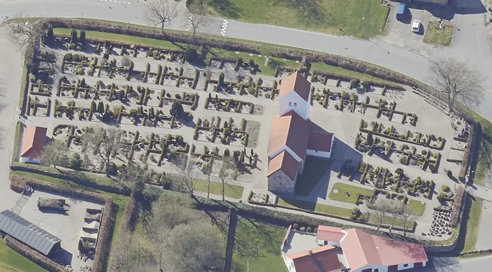
Das ist ein Luftfoto vom 19.04.2023 von Skråfoto - Lizenz: CC BY 4.0 - das die Kirche von Skivum zeigt. Skråfoto ist eine Webanwendung, die von Klimadatastyrelsen weltweit kostenlos bereitgestellt wird. Die Aufnahmen werden seit 2017 alle zwei Jahre erneuert und neben einer Senkrechtaufnahme wird ein Schrägbild aus jeder Himmelsrichtung angeboten, das man über eine Adresssuche aufrufen kann.
Bislang war ich nur einmal - im Sommer 1988 - in Skivum gewesen - siehe Foto im linken Frame. Damals hatte jemand die Runen mit weißer Schulkreide nachgezeichnet, was der Erkennbarkeit zu Gute kam.
Am Samstag, 04.06.2022, hatte ich im Rahmen meiner 2022er Jütland Wikingertour endlich mal wieder Zeit für einen neuerlichen Besuch. Ich traf glücklicherweise eine offene Kirche an, worüber ich zahlreiche digitale Fotos fertigen konnte.
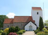 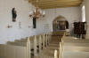 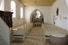 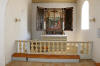 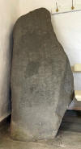 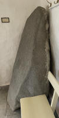 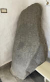 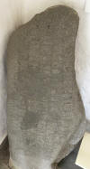 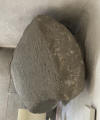
Der zuerst bekannt gewordene Standort ist von 1654, als er im östlichen Teil der Kirchhofeinfriedung stand. Auf Veranlassung von Prof. Jens Jacob Asmussen Worsaae (*14.03.1821 - 15.08.1885, dänischer Archäologe und Vorgeschichtler - link-LIVES - Bestattungsprotokoll)
 Bildquelle: Fotografie
zw. 1863-1900 von Fotograf Budtz Müller
(*26.12.1837 -
30.12.1884) -
Det Kgl. Biblioteks billedsamling - Lizenz:
Public Domain
Bildquelle: Fotografie
zw. 1863-1900 von Fotograf Budtz Müller
(*26.12.1837 -
30.12.1884) -
Det Kgl. Biblioteks billedsamling - Lizenz:
Public Domain
wurde der Runenstein 1850 ins Waffenhaus umgesetzt, wo er sich noch heute befindet.
Neben dem großen Runenstein von Harald Blauzahn in Jelling ist es der einzigste Runenstein in Dänemark auf dem das Wort "Dänemark" vorkommt. Die Bezeichnung Landmänner bedeutet wahrscheinlich Landbesitzer, hat aber wohl nichts mit Landbewirtschaftung zu tun. Eventuell handelt es sich auch um einen Titel - z.B. Bürgermeister, königlicher Beamter - aber nicht Lehnsmann.
Es ist ein ansehnlicher Runenstein, der zu den ältesten Dänemarks zu zählen ist. Leider wurde die Inschrift/Steinoberfläche über die Jahrhunderte an etlichen Stellen schwer beschädigt. Die Inschrift verläuft als sogenanntes "Bustrophedon" (Bezeichnet eine Schreibweise mit zeilenweise abwechselnder Schreibrichtung). Die Inschrift beginnt auf der linken Seite, die Zeilen 1 und 2 liest man von unten, die Zeile 3 von oben, Zeile 4 von unten, Zeile 5 von oben und letzlich Zeile 6 von unten.
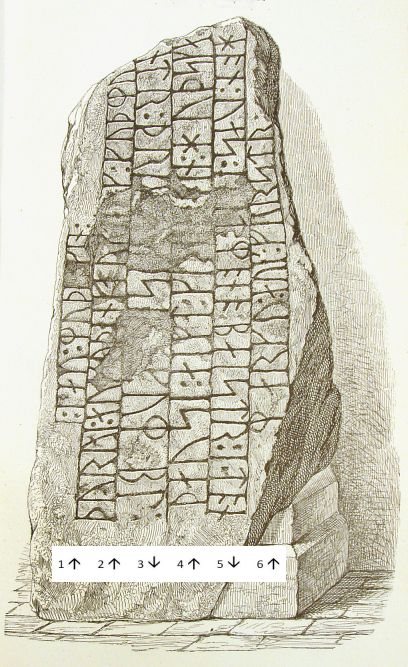
Der Runenstein stammt aus der Zeit zwischen 900 - 1020 n. Chr.
Der Runenstein wird wie oben bereits erwähnt erstmals 1654 durch Johannes Meier ( ca. 1660 - Lehrer und Verfasser) in seiner handgeschriebenen Liber monumentorum Danicorum, qvi monumenta Danica Olai Wormii partim emendat partim locupletat (pdf-Datei anhand eigener Fotos von mir erstellt) von 1654 (Blatt 9 ff.) - Königlichen Bibliothek in Kopenhagen - GKS 2371 kvart. erwähnt.


 Bildquelle:
Wikipedia - Lizenz:
Public Domain
Bildquelle:
Wikipedia - Lizenz:
Public Domain
hinzugefügt worden sein. Text und Zeichnungen der Handschrift - auch im Zusammenspiel - sind ansehnlicher ausgeführt als in NKS 799.
In der Königlichen Bibliothek in Kopenhagen hat sich von Johannes Meier aber auch noch eine zweite Handschrift erhalten - NKS 799 kvart - Joh. Mejeri Monumenta Runica in Dania (pdf-Datei anhand eigener Fotos von mir erstellt). Deren Entstehungsdatum ist nicht bekannt. Der Runenstein findet sich auf Blatt 7 ff.


NKS 799 kvart -
Joh. Mejeri Monumenta Runica in Dania - Papier -
44 Blatt, Blatt 41-44 unbeschrieben, aus dem 18. Jahrhundert, vormals Nr. 70 in
der Manuskript Sammlung von
Peder Frederik Suhm (*18.10.1728 - 07.09.1798). Es handelt sich um
ein Büchlein mit einfachem Pappeinband, der Buchrücken ist aus Leder und
verstärkte Ecken aus Leder weist der Buchdeckel auf. Es hat die Maße: H: ca. 20
cm / B: ca. 17 cm / D: ca. 1,5 cm. Zu den einzelnen Zeichnungen im Büchlein
wurde ein einfacher Maßstab abgebildet.
Bei beiden Exemplaren
weist immer das rechte Blatt der Doppelseite in der oberen Ecke eine mit
Bleistift geschriebene Seitenzahl auf. Diese beiden Werke sind Abschriften von
früheren Werken, die die Zeit nicht überdauert haben.
Vielleicht sind sie in Kopenhagen beim Großbrand von 1728
vernichtet worden, als neben zahlreichen privaten Beständen auch ca.
35.000 Bücher der Kopenhagener Bibliothek ein Raub der Flammen wurden!
Die
GKS 2371 kvart soll laut
Prof. Ludv. F. A. Wimmer
(*07.02.1839 -
29.04.1920, Philologe und Runenforscher
-
link-LIVES -
Politiets registerblade
-
Bestattungsprotokoll)
 Bildquelle:
Fotografie zw. 1877-1900 von Fotograf Hansen & Weller
-
Det Kgl. Biblioteks billedsamling - Lizenz:
Public Domain
Bildquelle:
Fotografie zw. 1877-1900 von Fotograf Hansen & Weller
-
Det Kgl. Biblioteks billedsamling - Lizenz:
Public Domain
und seinen Infos von Christian Walter Bruun (*10.12.1831 - 28.02.1906, Königlicher Oberbibliothekar - link-LIVES)
 Bildquelle: Fotografie
um 1880 von Fotograf J. Petersen
(*19.03.1829 -
01.02.1905) -
Det Kgl. Biblioteks billedsamling - Lizenz:
Public Domain
Bildquelle: Fotografie
um 1880 von Fotograf J. Petersen
(*19.03.1829 -
01.02.1905) -
Det Kgl. Biblioteks billedsamling - Lizenz:
Public Domain
von Niels Foss selbst abgeschrieben worden sein. Er hat die Texte laut den Studien von Erik Moltke (*04.04.1901 - 19.10.1984, Runologe, Historiker)
 Bildquelle: Scan von Buchumschlag "Runerne i Danmark og ders
oprindelse" - Erik Moltke - 1976 - Lizenz:
CC-BY-SA
Bildquelle: Scan von Buchumschlag "Runerne i Danmark og ders
oprindelse" - Erik Moltke - 1976 - Lizenz:
CC-BY-SA
offenbar überarbeitet, verkürzt oder geändert und seine eigene
Orthografie eingebracht (z.B. alt: haffuer - bei Foss: haver / tyck/tyk /
kircke/kirke / oc/og u.a.).
In der
NKS 799 kvart hingegen steht auf der Seite 37 links unten "Niels
Knudsen Jerne" und seine Handschrift lässt vermuten, dass er die
gesamte Abschrift angefertigt hat. Er war offenbar ein professioneller Schreiber
und könnte mit dem Niels Knudsen identisch sein, der
1728 "Skriverkarl" auf dem Holmen (Stadtviertel von
Kopenhagen) war, also ein Mann der schnell viele Texte schreiben und liefern
konnte. Er wurde am 08.11.1737 zum "ekvipageskriver"
ernannt. Es scheint dass er sich entgegen
Niels Foss sehr eng an das Original gehalten hat.
Offenbar gab es laut dem Katalog über die Büchersammlung
von
Peter
Hansen Resens (*17.06.1625 -
01.06.1688)
 Bildquelle:
Wikipedia - Lizenz:
Public Domain
Bildquelle:
Wikipedia - Lizenz:
Public Domain
"Bibliotheca
Regiæ Academiæ Hafniensi donata" Hafniæ (Kopenhagen) von
1685 - siehe
S. 273 - früher noch ein drittes Werk von
Johannes Meier mit dem Titel "Johan. Meieri
liber MS. de Monumentis Runicis sive antiqvis Danicics".
Quellen: Erik
Moltke -
Erik
Moltke -
Jon Skonvig og de andre runetegnere. Et bidrag til runologiens historie i
Danmark og Norge I-II,
1956-58 Band 2 -
Kapitel 13
Zwischen Montag, 26.09.2022, und Mittwoch, 28.09.2022, habe ich in der Königliche Bibliothek - Den sorte Diamant - in Kopenhagen - u.a. diese beiden alten Handschriften nach Online-Vorbestellung zur Ansicht erhalten. Ich durfte mir Aufzeichnungen machen, sie aber auch uneingeschränkt fotografieren. Ich habe sie mit dem Smartphone komplett als Doppelseiten fotografiert und daraus jeweils eine pdf-Datei erstellt. Vielleicht hat ja jemand Bedarf an diesen seltenen Ausgaben, die aufgrund ihres Alters keinem Urheberrrecht mehr unterliegen.
Erik Pontoppidan (Der Jüngere, dänisch-lutherischer Bischof, Theologe und Autor, *03.09.1698 - 20.12.1764)
 Bildquelle:
Wikipedia - Lizenz:
Public Domain
Bildquelle:
Wikipedia - Lizenz:
Public Domain
erwähnt ihn in seinem 1741 erschienen Werk "Marmora Danica II" auf Seite 233 als "Scheviensem" (Letzter Absatz, 9. Zeile von unten).
Er brachte in seinem weiteren Werk "Den Danske Atlas" - Tomus V Første Bind - aus dem Jahr 1769, S. 21 (a) - (S. 15 in der pdf-Datei) diese kurze Erwähnung über den Skivum Runenstein: "Ved østre Siden af Kirkegaards Muren findes en stor Steen med Runeskrift, som ved Tidens Ælde er beskadet og ikke vel kan læses."
Übersetzung: "An der östlichen Seite der Kirchhofmauer befindet sich ein großer Stein mit einer Runeninschrift, die über die Zeit beschädigt und nicht mehr gut lesbar ist."
Diese zeichnerische Darstellung des Runensteins stammt aus dem Jahre 1776 von Søren Abildgaard (*18.02.1718 - 02.07.1791, Zeichner, Kupferstecher und Geologe)
 Bildquelle:
Jellingprojektet - Lizenz:
Public Domain -
http://www5.kb.dk/images/billed/2010/okt/billeder/object444188/da/
Bildquelle:
Jellingprojektet - Lizenz:
Public Domain -
http://www5.kb.dk/images/billed/2010/okt/billeder/object444188/da/
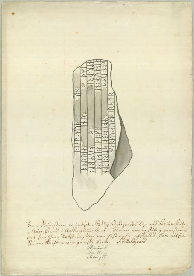
Das Originalblatt hat die Maße 25 x 38 cm. Darunter hat er diesen Text gesetzt:
Denne Runesteen er indsat i Sydlig Kirkegaards Dige ved Skivum Kirke i Aurs Herred i Aalborghuus Amt. Stenen var en Skifrig graastens Art, som Grov Vætsteen, den var hist og her afskallet, hvor altsaa Runeskriften var ganske borte. S. Abildgaard. - Anmerkung: Da liegt ein Fehler von Søren Abildgaard vor, da er "Sydlig/südlich" angibt, obwohl es richtigerweise "østlig/östlich" heißen müsste.
Der Digitalen Sammlung des Nationalmuseums Kopenhagen entlehnt - Lizenz: CC-BY-SA
Johan Gustav Liljegren (*27.02.1791 -02.06.1837, schwedischer Nationalarchivar und Archäologe)
 Bildquelle:
Schwedisches Reichsarchiv - Lizenz:
Public Domain
Bildquelle:
Schwedisches Reichsarchiv - Lizenz:
Public Domain
hat den Runenstein Skivum in seinem Werk "Run-Urkunder" von 1833 auf der S. 171 mit der Nummer 1505 - ohne Wiedergabe der Inschrift - angeführt.
Dieses Werk findet sich in einer digitalisierten Ausgabe im Internet über die Bayerische Staatsbibliothek / MDZ Münchener DigitalisierungsZentrum Digitale Bibliothek - urn:nbn:de:bvb:12-bsb10431145-1.
Von Rasmus Henrik Kruse (*07.08.1796 - 30.05.1877, Landschaftsmaler - link-LIVES - Heirat 21.12.1851)
 Bildquelle:
Det Kgl. Biblioteks billedsamling
- Lizenz:
Public Domain
Bildquelle:
Det Kgl. Biblioteks billedsamling
- Lizenz:
Public Domain
der zahlreiche Runensteine gezeichnet hat, hat sich im "Antikvarisk-Topografisk Arkiv" in Kopenhagen in seinen Aufzeichnungen mit dem Titel "Nørre Jyllands Mærkværdigheder i det 19. Aarh. Hs. Bd 1-2 (med) Tillæg 1-2" eine Zeichnung von 1841 und seine handschriftlichen Aufzeichnungen bewahrt (Band II, Nr. 11, S. 38 und Tillæg 1, S. 7ff.).
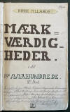 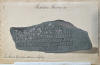 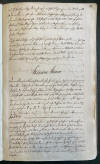 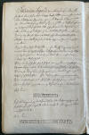 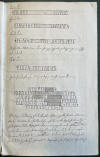 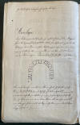


In seiner "Tillæg 1" findet sich zwischen den S. 8 und 9 noch eine absolute Besonderheit. Hier hat Kruse zwei Passagen von der Inschrift des Runensteins offenbar mit einer Art Graphitpulver abgeformt. Der obere Streifen gibt das erste Wort der Inschrift wieder (Det förste Ord paa Skivumstenen):
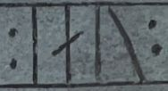
Der untere Streifen hingegen weist die letzten vier Runen der fünften Linie - also das letzte Wort - auf (Skivum Stenens sedste Ord 5. Linie):
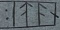
Hier nun meine Fotografie des Originals:

Die Bände von Kruse - ein echtes Kleinod - werden in Kopenhagen in dem "Antikvarisk-Topografisk Arkiv" aufbewahrt, worüber ich bei meinem Besuch am 27.09.2022 diese Fotos anfertigen konnte.
Durch Finnur Magnusson (dänisch auch Finn Magnusen; * 27. August 1781 in Skálholt/Island; 24. Dezember 1847 in Kopenhagen, isländischer Philologe und Archivar - link-LIVES)
 Bildquelle:
Wikimedia - Lizenz:
Public Domain
Bildquelle:
Wikimedia - Lizenz:
Public Domain
wurde der Artikel "Om Tvende Runestene I Nörre-Jylland" in der Antiquarisk Tidsskrift - 1843-45 veröffentlicht. Darin findet sich eine Abhandlung zum Skivum Runenstein auf den S. 186-190. Als Anlage findet sich als "Tab. VI." auch diese Zeichnung des Runensteins:
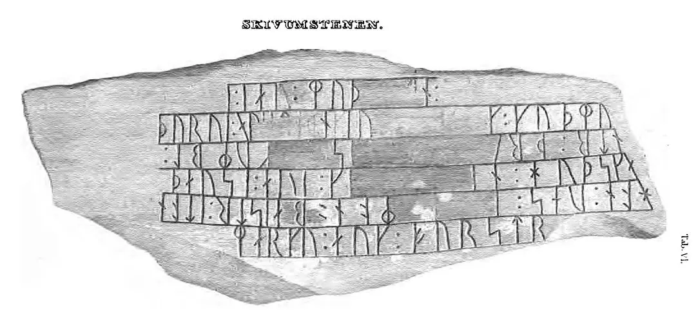
Abrufbar unter urn:nbn:de:bvb:12-bsb10533946-9 - Bayerische Staatsbibliothek.
Auch Prof. Jens Jacob Asmussen Worsaae (*14.03.1821 - 15.08.1885, dänischer Archäologe und Vorgeschichtler - link-LIVES - Bestattungsprotokoll)
Bildquelle: Fotografie
zw. 1863-1900 von Fotograf Budtz Müller
(*26.12.1837 -
30.12.1884) -
Det Kgl. Biblioteks billedsamling - Lizenz:
Public Domain
hat zu dem Runenstein von Skivum in seinem Notesbog X. aus dem Jahr 1850 einen Eintrag am 04. September auf der S. 90 vorgenommen.


Dessen Tagebücher werden ebenfalls in Kopenhagen in dem "Antikvarisk-Topografisk Arkiv" aufbewahrt, worüber ich bei meinem Besuch am 27.09.2022 diese Fotos anfertigen konnte.
Prof. P. G. Thorsen (*07.08.1811 - 06.05.1883, Bibliothekar, Runenforscher und Historiker - link-LIVES - Artikel: Levnedsbeskrivelser af de ved Københavns Universitets Firehundredaarsfest promoverede Doktorer, Illustreret Tidende 1882, Nr. 1235 - vom 27.05.1833 / Grabstein in Varde / Eheschließung in Varde am 19. August 1848)
 Fotografie
zw. 1863-1900 von
Fotograf Budtz Müller (*26.12.1837 -
30.12.1884) -
Det Kgl. Biblioteks billedsamling - Lizenz:
Public Domain
Fotografie
zw. 1863-1900 von
Fotograf Budtz Müller (*26.12.1837 -
30.12.1884) -
Det Kgl. Biblioteks billedsamling - Lizenz:
Public Domain
hat eine Zeichnung von Prof. Julius Magnus Petersen (*04.09.1827 - 31.01.1917, Archäologischer Zeichner und Restaurator - link-LIVES - Bestattungsprotokoll)
 Bildquelle: Fotografie
von 1903 von Fotograf Marius Christensen
(*24.06.1874 -
25.06.1907) -
Det Kgl. Biblioteks billedsamling - Lizenz:
Public Domain
Bildquelle: Fotografie
von 1903 von Fotograf Marius Christensen
(*24.06.1874 -
25.06.1907) -
Det Kgl. Biblioteks billedsamling - Lizenz:
Public Domain
in seinem Werk De danske runemindesmærker beskrevne og forklarede, anden Afdeling, Jyllands Runemindesmærker, I. Afbildninger, 1879, Nr. 23 aufgenommen - Google Scan.
In seinem Band II - Text von 1880 mit dem Titel "De danske runemindesmærker beskrevne og forklarede, anden Afdeling, Jyllands Runemindesmærker" macht er auf den S. 67-70 Ausführungen zu seinen Untersuchungen des Runensteins, die er am 22./23.08.1838 vor Ort vornahm.
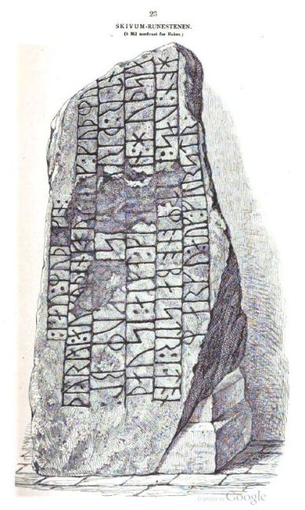
P. G. Thorsens Nachlass (Bezeichnet als: P. G. Thorsens optegnelser, tegninger m.m. vedrørende runer og runemindesmærker - überführt aus der Kopenhagener Universitätsbibliothek 1929 - Gemäß Ministerialschreiben vom 04.03.1929; früher benannt als Additamenta 612 kvart - findet sich in der Königlichen Bibliothek unter NKS 3296 (in mehreren einzelnen Pappschachteln). In der Pappschachtel Nr. 7 ist zu Skivum etwas dabei, wobei ich bislang nicht erkennen konnte von wem / von wann diese handschriftliche Aufzeichnung stammt. Die darunter abgebildete Notiz müsste von P. G. Thorsen stammen. Über Vergleiche zur Schreibweise verschiedener Wörter komme ich zu der Auffassung, dass diese Aufzeichnung von einer anderen (unbekannten) Person stammen müsste. Die Literaturangaben in "Danmarks Runeindskrifter" bei Jacobsen/Moltke helfen da leider auch nicht weiter.

In der Pappschachtel Nr. 17 wird außerdem noch dieses handschriftliche Notizblatt mit Anmerkungen und einer Zeichnung von seinen Untersuchungen vom 22./23.08.1838 verwahrt.

Prof. Ludv. F. A. Wimmer (*07.02.1839 - 29.04.1920, Philologe und Runenforscher - link-LIVES - Politiets registerblade - Bestattungsprotokoll)
Bildquelle:
Fotografie zw. 1877-1900 von Fotograf Hansen & Weller
-
Det Kgl. Biblioteks billedsamling - Lizenz:
Public Domain
bringt seine Forschungsergebnisse zu dem Runenstein in seinem großformatigen Werk "De danske runemindesmærker undersøgte og tolkede af Ludv. F. A. Wimmer, Andet Bind, Runestenene i Jylland og på øerne. 1899-1901, Nr. 3, S. 23 - eigener Scan.
Er hat den Runenstein persönlich vor Ort am 08.August 1878 und nochmals am 21.07.1892 untersucht.
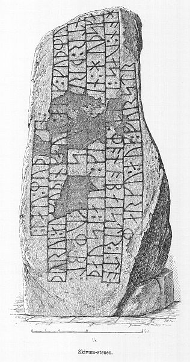
Ludv. F. A. Wimmer hat seine jahrelangen Aufzeichnungen der "Kgl. Bibliotek" in Kopenhagen überlassen. Ein Verzeichnis darüber wurde 1915 in Buchform herausgegeben - "Collectio runologica Wimmeriana: Fortegnelse over Ludv. F. A. Wimmers runologiske o. a. Samlinger i Det kgl. Bibliotek"
In seinen Unterlagen in der Königlichen Bibliothek befinden sich in "III - Originaltegninger af de danske Runemindesmærker, udførte paa Undersøgelsesrejserne af Magn. Petersen og kontrollerede paa Stedet af Ludv. Wimmer, samt Prøvetryk af de paa Grundlag af de nævnte Tegninger, Aftryk o. s. v. til De danske Runemindesmærker" udførte Afbildninger med Wimmers Rettelser" unter der Nummer 21 insgesamt vier Blätter.


Darunter diese Zeichnung von Magnus Petersen, die er auf den 08.08.1878 datiert hat.

Aber auch zwei Blätter über die Ludv. F. A. Wimmer nochmals Verbesserungen an dessen Zeichnung vornahm.


Johannes Brøndum-Nielsen (*02.12.1881 - 09.3.1977, Professor Dr. phil. für nordische Sprachen an der Universität Kopenhagen - link-LIVES)
 Bildquelle:
Danske Studier 1978 - S. 5 -
Lizenz:
CC BY-NC-SA 4.0
Bildquelle:
Danske Studier 1978 - S. 5 -
Lizenz:
CC BY-NC-SA 4.0
macht in den "Aarbøger for nordisk oldkyndighed og historie" - 1917 - im Artikel "Danske Runeindskrifter" auf den S. 213 und S. 217 Ausführungen zu den in der Inschrift enthaltenen Wörtern "Þurui" und "huÞski".
Der dänische Runologe Erik Moltke (*04.04.1901 - 19.10.1984, Runologe, Historiker - link-LIVES)
Bildquelle: Scan von Buchumschlag "Runerne i Danmark og ders
oprindelse" - Erik Moltke - 1976 - Lizenz:
CC-BY-SA
hat dieses Foto am 14.05.1931 aufgenommen und die Runen natürlich nachträglich nachgezeichnet.
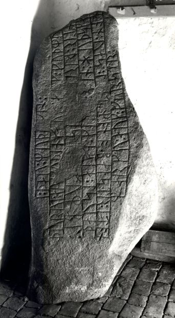
Der Digitalen Sammlung des Nationalmuseums Kopenhagen entlehnt - Lizenz: CC-BY-SA
Im Vorfeld zu dem 2016 erschienenen Buch von Lisbeth M. Imer (*1973, Runologin am Nationalmuseum Kopenhagen) "Danmarks Runesten - en fortælling" reiste sie mit dem Fotografen Roberto Fortuna zur Bestandsaufnahme durch die Lande. Dieses Foto des Runensteins wurde bei dieser Tour am 09.11. 2011 von ihm aufgenommen.
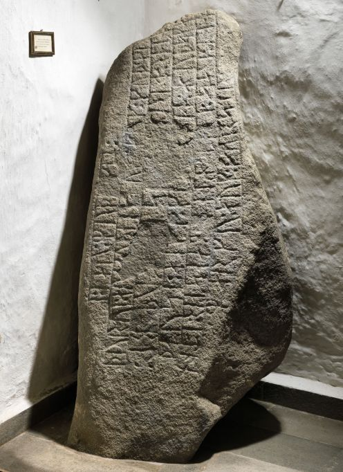
Der Digitalen Sammlung des Nationalmuseums Kopenhagen entlehnt - Lizenz: CC-BY-SA
Der Eintrag in der dänischen Runendatenbank mit allen Informationen findet sich hier.
Die Informationen in "Fund og Fortidsminder" zu dem Runenstein finden sich hier. Darin ist inzwischen dieser Zustandsbericht des Steinrestaurators Leif Vognsen aus dem Jahr 2018 eingebettet.
Über diesen Link finden sich zu dem Runenstein Informationen des Forschungsprojektes "Runes" der Akademie der Wissenschaften zu Göttingen.
Über die Webseite www.biopix-foto.de kann man sich dieses Foto des Runensteins anschauen, bei dem die Runen mit roter Farbe nachgezeichnet und darüber die Lesbarkeit deutlich erhöht wurde.
Literaturhinweise:
Om Tvende Runestene I Nörre-Jylland - in: Antiquarisk Tidsskrift - 1843-45 - II. Skivum-Stenen - S. 186-190 - Finn Magnusen - abrufbar unter urn:nbn:de:bvb:12-bsb10533946-9 - Bayerische Staatsbibliothek
Til Skivum-Stenen - Harry Andersen - Danske Studier 1943 - S. 97-112